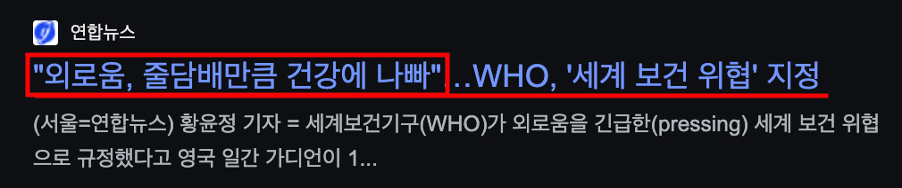

식사 중에도 말 한마디 없는 침묵.
식사 중에도 말 한마디 없는 침묵.
가족과 함께 있어도 그저 외롭고
투명인간처럼 느껴진다면?
자녀들은 다 독립하고 외로운데
이젠 어떻게 살아야 할지
허무하기만 하다면?
가족과 관계를 회복하고 싶어도
혼자서는 도저히 방법을
찾지 못하고 있다면?
.
.
.
.
.
중년에 찾아오는
외로움, 고독,소외감
절대로 방치하지 마세요!

우울증과 치매, 심지어
암 발병 위험까지 높이는
위험한 요소로서
가볍게 생각하고
문제를 방치하다가
소중한 돈, 시간, 건강을
낭비하지 않도록!
간단한 참여로
3명의 전문가들에게
정확한 해결 방법을
찾을 수 있는 기회!
실제 외로움과 우울증을
잘 극복했던 경험과 함께
많은 상담 경험과
해당 노하우를 가진
최고의 전문가를 모셔
고민의 문제 원인과 삶에
적용할 수 있는
실전 해결책을 배울 수 있는 시간을
가정의 달 특집을 기념하여
선착순 참여 기회를 드립니다!

병원 밖 마음치유공간
[마음 디톡스] 6번째 주제!
'우울증을 부르는
가족간의 외로움, 소외감'
극복 및 관계 회복을 위한
5월 가정의 달 이벤트!
선착순 100명에게
참여 이벤트 혜택 제공!

외로움, 고독감으로 인한
우울증을 극복한
전문가분들의
실전 노하우를 듣고
바로 실천해보세요!
익명을 보장합니다
1) 어디에서도 듣기 힘든 생생한 사례를 기반!
수십년의 시행착오 끝에 알게 된 노하우로 답을 알려드립니다.
단순한 이론과 현실에 바로 쓸 수 없는 이야기가 아니라, 실제 우울증을 극복하기 위해 수많은 노력과 시행착오를 겪어오면서 알게 된 실전 팁을 알려드리는데 집중합니다.
철저한 데이터 보호를 약속합니다
2) 수많은 상담 경험과 실력을 갖춘 전문가로 섭외!
실제 사례를 중심으로 고민 해결을 더 빠르게!
많은 상담 이력과 풍부한 사례를 통해 여러분의 고민을 기반으로 해결 방법을 찾을 수 있는 기회를 제공합니다.

3) 집에 가서 즉시 시도해볼 수 있도록!
바로 적용할 수 있는 실천 방법을 제공합니다.
바로 실천하기 힘든 이론에 대한 이야기가 아닌, 집에 가자마자 바로 적용할 수 있는 실전 방법론을 기반으로 하여 여러분의 삶과 가족 관계를 개선하는데 집중합니다.
우리의 연사를 소개합니다
50~60대도 편하게 읽을 수 있도록
큰 글자와 넓은 화면으로 준비했습니다.

윤종모 주교
서울대교구 주교
"소통이 회복되면, 관계도 회복됩니다."

마가스님
동국대학교 정각원 교수
"나를 사랑해야, 진짜 가족도 사랑할 수 있습니다."

함영준 대표
감정 훈련 지도자
"지금 이 감정이, 나의 다음 삶을 바꿉니다."
가족 관계를 회복해나가는
마음디톡스 프로그램 일정
5월 21일 수요일,
가족의 관계를 회복하는
특별한 컨퍼런스에 참여하세요.
15:00 ~ 15:10 (10분)
오프닝 · 마음을 여는 시간
함영준 대표님
마음건강 길 대표
15:10 ~ 15:40 (30분)
가족 안에서 잃어버린 나를 찾아서: 소통과 관계 회복의 지혜
가족 간의 소통이 어려운 분들에게 관계를 회복하는 행복한 의사소통 방법을 전달드립니다.
윤종모 주교
서울대교구 주교
15:40 ~ 16:10 (30분)
나는 내 인생의 주인공
낮아진 자존감과 고독을 날리고 자존감을 높이는 마음챙김 법으로 내면의 행복을 찾는 방법을 안내합니다.
마가스님
동국대 정각원 교법사, 자비명 대표
16:10 ~ 16:20 (10분)
휴식 및 질문 작성
행복하고 싶은 질문을 자유롭게 적어보는 시간입니다.
16:20 ~ 16:50 (30분)
패널 토크
참여자 토론형 질문을 토대로 두 강연자와 함께하는 힐링형 토크 시간입니다.
윤종모 주교, 마가스님, 함영준 대표님
패널 토크 세션
16:50 ~ 17:00 (10분)
클로징
마무리 인사